California housing
Lecture 2 Géron Ch. 2
Applications of Machine Learning
BSc Mathematics of Artificial Intelligence · Third year
Last lecture we looked at the data and split it. Everything you need from that, in one table:
| What we found | Why it matters today |
|---|---|
One categorical column, ocean_proximity, one level with n=5 | it has to be encoded, and that level will be absent from some folds |
207 missing values in total_bedrooms | something must fill them, and that something is learned from data |
| Features on wildly different scales | they have to be scaled, and scaling is also learned from data |
| A target capped at $500,000 | 4.8% of rows carry a label that is not the answer |
| 16,512 training / 4,128 test, stratified on income | the test rows are sealed until the last ten minutes of today |
Three of those five say learned from data. That is the whole subject of the middle of this lecture.
By the end you will have a defensible number for this problem, and — more usefully — the procedure that makes any number defensible.
The mathematics
Géron §4.1, brought forward — today we fit a linear model, so today we should know what fitting one does
20 minutes · examinable
You called LinearRegression().fit().
What did it actually compute — and when does that computation fail?
A weighted sum of the input features, plus a constant called the bias or intercept term.
where $\mathbf{x}$ contains $x_0$ through $x_n$ with $x_0 \equiv 1$, so the dot product reproduces the bias term.
Training the model means setting $\boldsymbol\theta$ so the model best fits the training set. To do that we need a measure of how badly it fits.
Mean squared error of a linear hypothesis
Because $\sqrt{\cdot}$ is strictly increasing on $[0,\infty)$:
Same minimiser, simpler algebra.
Stack the instances as rows of $\mathbf{X}$ and the labels into $y$:
We are minimising a squared Euclidean norm. That is a geometric statement, and it is the whole content of this thread.
Setting the gradient to zero at the minimiser $\hat{\boldsymbol\theta}$:
A stationary point. Is it a minimum?
The Hessian of the MSE is
For any vector $\mathbf{v}$, $\;\mathbf{v}^{\intercal}\mathbf{X}^{\intercal}\mathbf{X}\mathbf{v} = \lVert \mathbf{X}\mathbf{v}\rVert_2^2 \ge 0$, so the Hessian is positive semi-definite and the MSE is convex.
A convex function has no local minima — only a global one. Any stationary point is it.
This is also why gradient descent, in Lecture 4, is guaranteed to find the same answer.
Rearranging $\mathbf{X}^{\intercal}\mathbf{X}\hat{\boldsymbol\theta} = \mathbf{X}^{\intercal}y$:
A closed-form solution — no iteration required
A closed-form equation is composed only of a finite number of constants, variables and standard operations. No infinite sums, no limits, no integrals.
Read the stationarity condition again: every column of $\mathbf{X}$ is orthogonal to the residual.
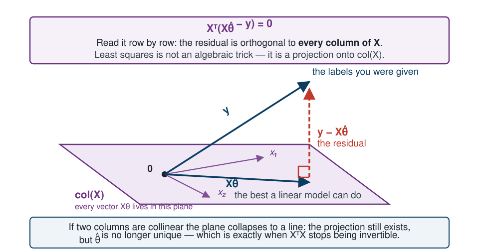
import numpy as np
from sklearn.preprocessing import add_dummy_feature
housing_num = X_train.select_dtypes(include=[np.number]) # 16,512 x 8
X = make_pipeline(SimpleImputer(strategy="median"),
StandardScaler()).fit_transform(housing_num)
y = y_train.values
X_b = add_dummy_feature(X) # add x0 = 1 to each instance
theta_best = np.linalg.inv(X_b.T @ X_b) @ X_b.T @ y
The @ operator is matrix multiplication.
PyTorch, TensorFlow and JAX all support it; pure Python lists do not. Eight
features, so $\hat{\boldsymbol\theta}$ has nine entries.
>>> theta_best[:3].round(1)
array([206333.5, -85371.4, -90829.7])
>>> lin_reg = LinearRegression().fit(X, y)
>>> np.abs(theta_best - np.r_[lin_reg.intercept_, lin_reg.coef_]).max()
6.4e-10
Identical to floating-point precision. Scikit-Learn separates
the bias term (intercept_) from the feature weights
(coef_); we stacked them back together to compare.
If the geometry is right, the residual must be orthogonal to every column of $\mathbf{X}$ — so $\mathbf{X}^{\intercal}\mathbf{r}$ should be numerically zero.
residual = X_b @ theta_best - y
print(np.abs(X_b.T @ residual).max()) # 7.1e-06
print(np.abs(X_b.T @ y).max()) # 3.4e+09 — the scale to judge it by
Not exactly zero: floating-point arithmetic. But $7.1\times10^{-6}$ against a scale of $3.4\times10^{9}$ is a relative $2\times10^{-15}$ — machine epsilon, on a double.
A cheap, decisive check that your solver did what the mathematics says it should. Note that “small” is meaningless until you divide by something.
The equation requires $\left(\mathbf{X}^{\intercal}\mathbf{X}\right)^{-1}$ to exist.
$\mathbf{X}^{\intercal}\mathbf{X}$ is $(n{+}1)\times(n{+}1)$. It is invertible if and only if it has full rank — equivalently, if and only if $\mathbf{X}$ has linearly independent columns.
Two ways to lose that.
If $m < n$, then $\operatorname{rank}(\mathbf{X}) \le m < n+1$, so $\mathbf{X}^{\intercal}\mathbf{X}$ is singular.
Common in genomics, text, and any wide-feature setting.
If one column is a linear combination of others, the columns are dependent and $\mathbf{X}^{\intercal}\mathbf{X}$ is singular again.
Exact collinearity is rare; near collinearity is common.
In Lecture 5 we will repair this with ridge regression, which adds $\alpha\mathbf{A}$ and makes the matrix invertible for every $\alpha > 0$.
It does not invert anything. It computes
where $\mathbf{X}^{+}$ is the pseudoinverse — specifically the Moore–Penrose inverse.
np.linalg.pinv(X_b) @ y # same result
Singular value decomposition factors the training matrix as
To build $\boldsymbol\Sigma^{+}$: take $\boldsymbol\Sigma$, set to zero every value below a tiny threshold, replace the remaining values by their reciprocals, and transpose.
The pseudoinverse is always defined, even when the inverse is not.
| Method | In $n$ (features) | In $m$ (instances) |
|---|---|---|
| Normal equation | $O(n^{2.4})$ to $O(n^{3})$ | $O(m)$ |
| SVD (Scikit-Learn) | $O(n^{2})$ | $O(m)$ |
Both become very slow when $n$ grows large — say 100,000 features. That is what gradient descent is for.
LinearRegression never fails on this data even though
the matrix could be singular; say why the collinearity warning at the end of
the last lecture was not pedantry; and, in Lecture 5, see immediately
why adding $\alpha\mathbf{I}$ repairs the invertibility for every
$\alpha>0$.
examinable Derive the normal equation; state and justify the invertibility condition.
Before we build anything
15 minutes · examinable
Fit an unconstrained decision tree on the 16,512 training districts, then score it on those same 16,512 districts.
0.0
No error at all.
Two explanations. Only one of them is flattering.
Housing prices would have to be an exact deterministic function of nine census attributes — eight numbers and a category.
Reject.
A decision tree left unconstrained keeps splitting until every leaf is pure.
This is overfitting: excellent on the training data, useless on anything else.
Overfitting is a property of the model.
A training score cannot see it.
Linear regression on the same rows gives $68,233. That one happens to be honest to within $49 — but only because the model is too rigid to memorise, and nothing in the number tells you which case you are in.
No — not yet.
We are still choosing between models and tuning them. Every time a choice is made by looking at the test score, that score stops being an estimate of performance on unseen data and becomes a target we are fitting to.
This is the same argument as the specimen exam question
in the last lecture, where a loop chose $\alpha$ by scoring on
X_test. We answer the rest of that question at the end of today.
A score can also be corrupted before any model is fitted:
scaler = StandardScaler()
housing_scaled = scaler.fit_transform(housing_full) # all 20,640 rows
train_set, test_set = train_test_split(housing_scaled) # then split
It raises no exception and the reported score improves. How much it improves is not knowable from the code — sometimes nothing, sometimes everything — which is why the rule is procedural rather than a matter of judging each case.
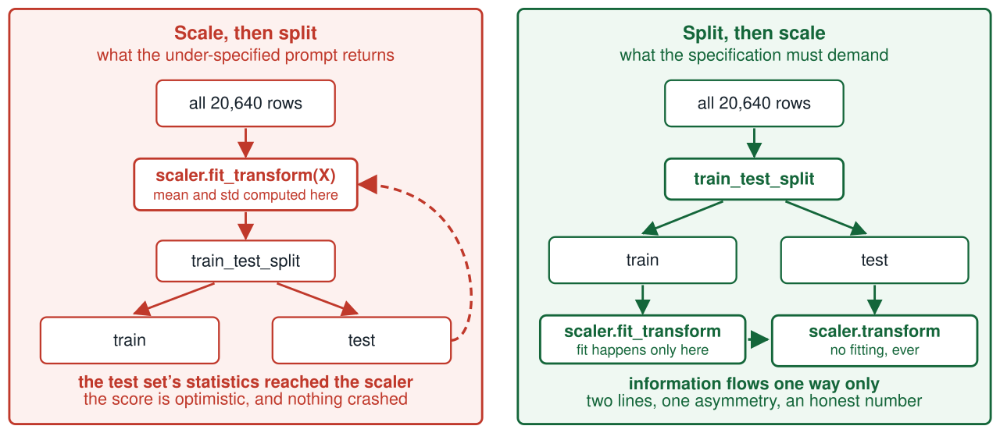
Same two operations, opposite order. In the upper flow the test rows help define the transformation applied to them; in the lower one information moves one way only.
fit() or fit_transform() on the validation set, the
test set, or new data. Once fitted, you may transform() anything.
This applies to imputers, scalers, encoders, dimensionality reduction — everything that learns anything from data.
We will not rely on remembering it. The rest of this lecture builds an object that makes violating it structurally impossible.
| Requirement | Because |
|---|---|
| An estimate of error on rows the model has not seen | a training score cannot see overfitting |
| … without touching the test set | it is spent the first time it influences a choice |
| … with a spread, not one number | two estimates are only different if the spread says so |
| … and all preprocessing refitted inside it | otherwise the estimate leaks and is optimistic |
All four are satisfied by one procedure.
The method
40 minutes · examinable
Open Lecture 2 in Google Colab
Everything from here to the end of the lecture, runnable. It repeats the Lecture 1 load and split in its first two cells, so it stands on its own.
Split the training set again: a smaller training set, and a validation set (also called the development set). Train the candidates on the reduced set, select on the validation set, retrain the winner on the full training set, and evaluate once on the test set.
Validation set too small
Evaluations are imprecise; you may select a suboptimal model by chance.
Validation set too large
The remaining training set is much smaller than the full one — like selecting a sprinter to run a marathon.
Solution: many small validation sets, used in rotation.
Split the training set into $k$ non-overlapping folds. Train and evaluate $k$ times, holding out a different fold each time.
Cost: you train the model $k$ times.
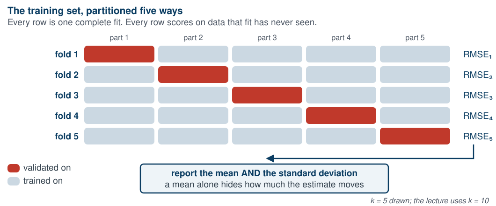
Five fits to get one number — and a second number, the spread, that a single holdout could never give you.
from sklearn.model_selection import KFold, cross_val_score
# not cv=10: the default KFold does not shuffle
cv = KFold(n_splits=10, shuffle=True, random_state=42)
tree_rmses = -cross_val_score(tree_reg, X_train, y_train,
scoring="neg_root_mean_squared_error", cv=cv)
# about 25 s
Why the minus sign. Scikit-Learn’s cross-validation expects a utility function (greater is better), not a cost function. The scorer is the negative RMSE, so flip the sign back.
Why the explicit KFold.
cv=10 takes ten contiguous blocks in row order. Two of you
whose frames are sorted differently then get different folds and cannot
see why your numbers disagree.
The runtime comment is there so that four minutes of no output is not read as “it hung” and interrupted. Timings are for a free Colab CPU runtime and are not examinable.
>>> pd.Series(tree_rmses).describe()
count 10.000000
mean 68573.733113
std 2014.711361
min 65499.052101
25% 66693.914880
50% 69070.930754
75% 69962.630213
max 70958.417942
The honest number for that same tree: $68,574, not zero.
And something a single number cannot give us: a spread. The ten folds run from $65,499 to $70,958, so any comparison that turns on less than a couple of thousand dollars is not a comparison.
| Model | Training RMSE | Cross-validated RMSE |
|---|---|---|
| Predict a constant | $115,311 | $115,300 |
| Linear regression | $68,233 | $68,282 |
| Decision tree | $0 | $68,574 |
| Random forest | $18,058 | $48,687 |
Now the table is readable. The gap between the two columns is the overfitting — and the first row, which cannot overfit anything, has no gap at all.
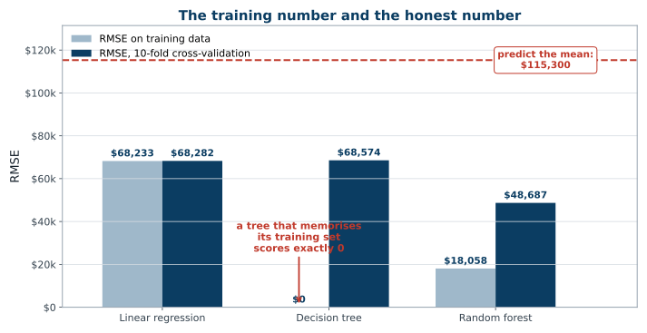
The decision tree has no training bar at all. Its perfect score is a bar of height zero — and that is exactly how much it told you.
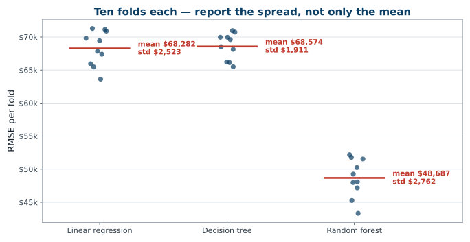
All three spreads are around ±$2,000–$3,000 — and that is mostly which districts landed in the fold, not the model. Any difference smaller than this is not a difference.
Fixes for overfitting: simplify the model, constrain it, or obtain more training data.
The tree’s mean is $292 above the linear model’s, and the folds scatter by $2,000. So compare them fold by fold: both models saw the same ten folds, and the shared fold-to-fold noise cancels in the difference.
| Per-fold difference | Mean | Std | Same sign in all 10? |
|---|---|---|---|
| Decision tree − linear regression | +$292 | $1,634 | no |
| Random forest − linear regression | −$19,594 | $1,650 | yes |
The forest is genuinely better — it averages many trees fitted on random subsets, and if their errors are not strongly correlated the average is more accurate than any of them. (Lecture 7 makes that precise, and derives it.) The tree is indistinguishable from the linear model — a paired $t$-test gives $p = 0.59$, and on six of the ten folds the tree is the better of the two.
Say “the tree is worse” and you have read a ranking out of noise. Two numbers are only different if you have shown that they are.
full_pipeline = Pipeline([
("prep", preprocessing), # the ColumnTransformer
("model", RandomForestRegressor(random_state=42)),
])
When cross_val_score holds out fold $j$, the entire pipeline
— imputer, encoder, scaler, model — is fitted on the other folds only.
The transformers never see the held-out fold. Leakage cannot occur by accident.
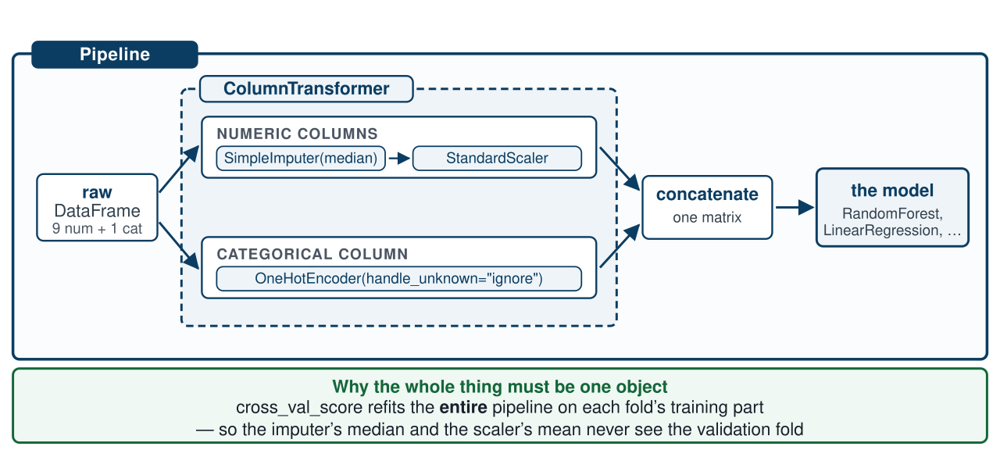
One object, so cross_val_score refits all of it on each fold’s training part — the imputer’s median and the scaler’s mean never see the validation fold.
from sklearn.model_selection import GridSearchCV
param_grid = {"model__max_features": [4, 6, 8, 10, 12],
"model__n_estimators": [30, 100, 200]}
grid_search = GridSearchCV(full_pipeline, param_grid, cv=cv,
scoring="neg_root_mean_squared_error", n_jobs=-1)
grid_search.fit(X_train, y_train) # 15 x 10 = 150 fits, about 4 minutes
model__max_features reads as: the step named
model, its parameter max_features. Double underscores
address any hyperparameter of any estimator, however deeply nested.
Four minutes with no output. That is the cell working, not the cell hanging — do not interrupt it. (Timing not examinable.)
>>> grid_search.best_params_
{'model__max_features': 8, 'model__n_estimators': 200}
>>> -grid_search.best_score_
48179.64299597594
$48,180, improved from $48,687 — a gain of $508, against a fold spread of $2,762. Note that carefully: 150 fits bought us something we cannot cleanly distinguish from noise.
n_estimators.
A winner sitting on the edge of the grid means the optimum may lie outside
it. Search again with higher values.
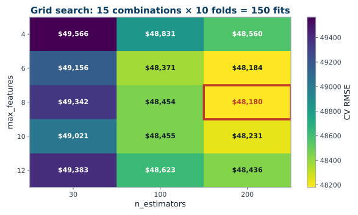
Look where the winner sits: hard against the right edge of the grid. We did not find the optimum — we found the edge of what we searched.
The imputer lives inside the ColumnTransformer
inside the Pipeline. The same double-underscore path reaches it,
so it can be tuned by the same search:
grid = {"prep__num__simpleimputer__strategy":
["median", "mean", "most_frequent"]}
| Imputation strategy | Cross-validated RMSE |
|---|---|
median | $48,180 |
mean | $48,154 |
most_frequent | $48,171 |
A spread of $26 across the three. With 207 missing values out of 20,640, that is exactly what it should be — and now we know, instead of assuming.
The reason to put preprocessing in the pipeline is not that tuning it always helps. It is that preprocessing and model interact, and the pipeline is what lets you find out whether they do here.
from sklearn.model_selection import RandomizedSearchCV
from scipy.stats import randint
param_distribs = {"model__max_features": randint(low=2, high=13),
"model__n_estimators": randint(low=30, high=500)}
rnd_search = RandomizedSearchCV(full_pipeline, n_iter=10, cv=cv, n_jobs=-1,
param_distributions=param_distribs,
scoring="neg_root_mean_squared_error",
random_state=42)
HalvingGridSearchCV and
HalvingRandomSearchCV run a tournament: generate many candidates,
evaluate them all on a small slice of the training set, promote the best with
more data each round, and evaluate the finalists at full resource. Same search
space, considerably less compute.
Lecture 7 makes “different kinds of errors” precise, by deriving the variance of an average of correlated predictors.
>>> sorted(zip(importances.round(4), feature_names), reverse=True)
[(0.4418, 'num__median_income'),
(0.1511, 'cat__ocean_proximity_INLAND'),
(0.1146, 'num__longitude'),
(0.1043, 'num__latitude'),
(0.0494, 'num__housing_median_age'),
[...]
(0.0062, 'cat__ocean_proximity_NEAR OCEAN'),
(0.0020, 'cat__ocean_proximity_NEAR BAY'),
(0.0003, 'cat__ocean_proximity_ISLAND')]
Median income dominates, as the correlation column predicted.
Longitude and latitude together take 0.22 — the forest has rediscovered
the coast from two raw coordinates. Of the ocean-proximity categories, only
INLAND scores at all — though see the caveat on the next
slide before concluding the others are worthless.
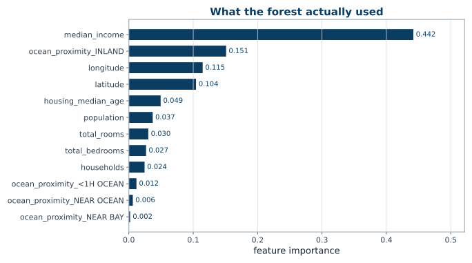
Some of the one-hot ocean-proximity columns earn almost nothing. Importance is a reason to try dropping a feature, and then to measure — never a reason to drop it outright. We measure at the end of this lecture.
Bottom of that list: ocean_proximity_ISLAND, at
0.0003. Five districts in California. Recall where they went:
| ISLAND districts | Total | In training | In test |
|---|---|---|---|
| Stratified 80/20 on income, not on this | 5 | 2 | 3 |
The model has seen the category twice. It will be asked about it three times, and we will report those three answers inside an average of 4,128.
handle_unknown="ignore" does not raise on a category it never
saw. It emits [0, 0, 0, 0] — a district that is nowhere
near the ocean and nowhere inland — silently.
With our seed no fold loses it; over 500 reshufflings,
11.2% produce at least one fold in which the encoder is
fitted without ISLAND and then asked about it.
A one-in-nine chance of a silently wrong column, invisible in the score. This is what “rare categories will cause trouble” meant.
A model should work well not only on average, but across categories of district — rural or urban, rich or poor, northern or southern.
We do exactly this in the last fifteen minutes of today, on the test set, and it changes what we would tell the client.
final_model = grid_search.best_estimator_ # refitted on all of X_train
X_test = strat_test_set.drop("median_house_value", axis=1)
y_test = strat_test_set["median_house_value"].copy()
final_predictions = final_model.predict(X_test)
final_rmse = root_mean_squared_error(y_test, final_predictions)
$49,037
Note we predict on the test set. We never
fit anything on it.
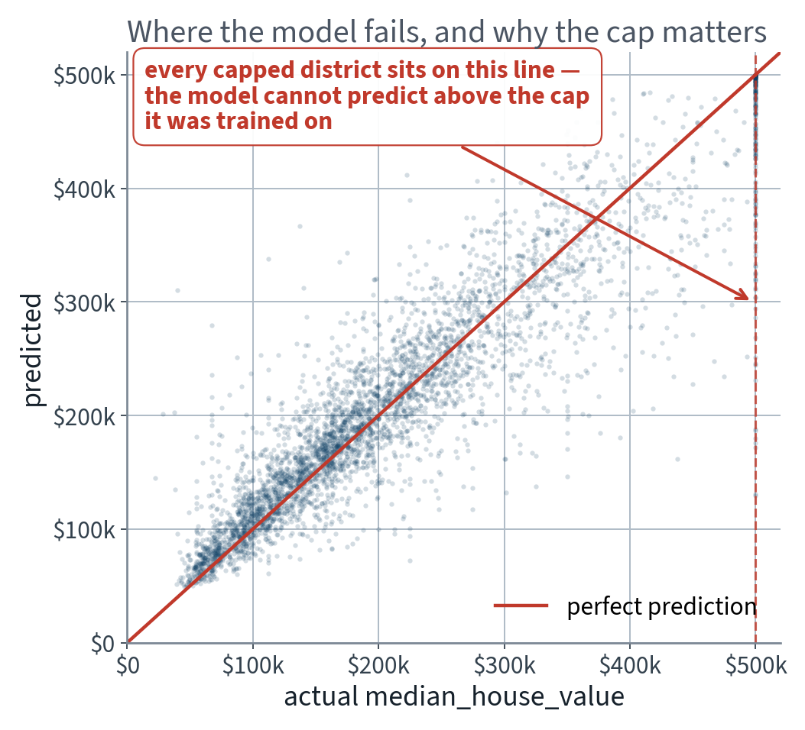
The stripe at $500,001 is the cap, coming back to collect: every district on it is one the model cannot get right.
from scipy import stats
def rmse(squared_errors):
return np.sqrt(np.mean(squared_errors))
squared_errors = (final_predictions - y_test) ** 2
boot_result = stats.bootstrap([squared_errors], rmse, confidence_level=0.95,
method="percentile", # scipy defaults to BCa
random_state=42)
rmse_lower, rmse_upper = boot_result.confidence_interval
95% interval: $46,752 – $51,379.
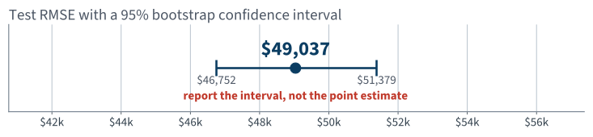
Those improvements would not generalise. You would simply be overfitting the test set instead — and the test set is the only thing standing between you and a confident fiction.
We searched 15 configurations, so the effect here is small enough to be invisible. Search 10,000 and it will not be.
examinable Why tuning against the test set makes the test score optimistic, and why the bias is a statement about repeated splits rather than about this one.
| Actual | Predicted | Error | income_cat | ocean_proximity |
|---|---|---|---|---|
| $500,001 | $129,715 | −$370,286 | 2 | <1H OCEAN |
| $500,001 | $130,590 | −$369,412 | 3 | INLAND |
| $131,300 | $464,117 | +$332,817 | 5 | <1H OCEAN |
| $500,001 | $171,694 | −$328,307 | 2 | <1H OCEAN |
| $500,001 | $175,534 | −$324,467 | 1 | INLAND |
Seven of the ten are capped districts the
model under-predicts by a quarter of a million dollars. The third row is the
mirror image: a district whose median_income is 15.0001 — the
other cap — and which the model therefore prices as if it were
Beverly Hills. It is worth $131,300.
Both caps, spotted in a histogram before any model existed, are now the two largest errors of the finished system. Look at your worst cases. Always.
One number for 4,128 districts is a summary, not a finding. Break it out by the categories the client cares about:
| income_cat | n | RMSE |
|---|---|---|
| 1 (poorest) | 165 | $62,606 |
| 2 | 1,316 | $43,082 |
| 3 | 1,447 | $48,381 |
| 4 | 728 | $53,152 |
| 5 (richest) | 472 | $54,333 |
| ocean_proximity | n | RMSE |
|---|---|---|
| INLAND | 1,250 | $39,829 |
| <1H OCEAN | 1,862 | $48,967 |
| ISLAND | 3 | $54,754 |
| NEAR OCEAN | 569 | $57,191 |
| NEAR BAY | 444 | $60,195 |
The poorest 165 districts are predicted worst in dollars — and their median price is $91,300, so in relative terms it is far worse still. NEAR BAY is 51% worse than INLAND. And the ISLAND number is computed from three districts: report it with the count or do not report it.
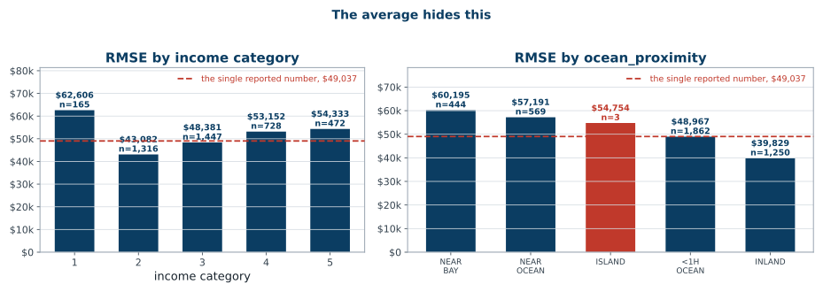
A single RMSE of $49,037 describes none of these five groups. That is the answer to “also check fairness”, and it is a different report to the client.
The cap causes the worst errors. So remove the 205 capped districts from the test set and measure again:
| Evaluated on | n | Model RMSE | Constant baseline |
|---|---|---|---|
| All test districts | 4,128 | $49,037 | $115,727 |
| Capped districts removed | 3,923 | $44,197 | $97,908 |
Any time a number improves, ask first whether the evaluation set moved. Dropping rows is the cheapest way in the world to improve a metric, and it is almost never a result.
Should we drop them? For training, arguably yes — they teach the model a price that does not exist. For reporting, only with the sentence above attached.
The brief said the experts are off by more than 30% of the price. We optimised dollars. Here is what that cost — measured on the training folds, because comparing two differently-trained models is a choice, and choices are not made on the test set:
| Trained on | RMSE | Median error, as % of price | Within 30% |
|---|---|---|---|
| the price (what we did) | $48,629 | 12.0% | 85.0% |
| $\log$ of the price | $49,646 | 11.5% | 86.5% |
Exactly the trade the metric slide predicted: regressing the log target is $1,017 worse in dollars and 1.5 points better on the criterion the stakeholder actually stated. Neither is the right answer — but choosing without measuring is not a choice.
Also worth carrying to the client: the cheapest tenth of districts is predicted with an RMSE of $38,441, the dearest tenth with $97,519. In dollars the model is worst where the money is; in percentages it is worst where the money is not.
The last fifteen minutes
15 minutes
| Measured how | RMSE | vs the baseline |
|---|---|---|
| Predict a constant — the training mean | $115,311 | — |
| Best model, cross-validated on the training set | $48,180 | 58% better |
| The same model, on the test set, once | $49,037 | 58% better |
The first row is the one people leave out. Without it, $49,037 is a number with no units of judgement attached to it.
On the stakeholder’s own criterion, the system is within 30% on 85.1% of districts, and its median miss is 11.3%. The experts were said to be off by more than 30% typically. So: plausibly better — on an assumption we were handed and never checked.
It may still be worth launching — especially if it frees the experts for work only they can do. But do not deploy it unqualified for the poorest districts, or for the 205 at the cap.
“Is the model good?” is not a question about RMSE. It is a question about what the organisation does with it.
Keep these. They catch most of what goes wrong in this course and in your own projects, and questions 1 and 2 are what Part B of the paper asks when it hands you a code excerpt.
Partly — and only if you ask it as an adversary, not as an author. This is step 3 of the loop from Lecture 1, delegated.
Give it the failure to look for, and a number to disbelieve. Generic review requests return generic praise.
| Bug | Found from the code alone? |
|---|---|
fit_transform on the full set | yes |
| Preprocessing outside the cross-validated pipeline | yes |
| Test set evaluated more than once | no — that is session history, not code |
| A feature unavailable at prediction time | no — that is domain knowledge |
| Split not stratified on the right variable | no — “right” is your judgement |
Three of the five require something the assistant cannot read off the file. Those three are yours.
Every failure named today is preventable at specification time. Keep this as a standing constraint in every request:
Pipeline passed to cross-validation. Nothing derived from the
test set may appear in the training path. Fixed random seed. Print the fold
scores, not just the mean.”
A specification is cheaper than a diagnosis. Every notebook in this course is written against it, which is why none of them contains the failures above.
The specimen question from the last lecture: a loop
choosing $\alpha$ by scoring on X_test. You could answer 1 and 2
then. You can answer 3 and 4 now, because cross-validation exists.
gs = GridSearchCV(Ridge(), {"alpha": [0.01, 0.1, 1, 10, 100]},
scoring="neg_root_mean_squared_error",
cv=KFold(10, shuffle=True, random_state=42)
).fit(X_train, y_train)
print(root_mean_squared_error(y_test, gs.predict(X_test)))
RidgeCV does the same job in one line and is
equally acceptable. What is not acceptable is any version in which
X_test appears before the choice is made.
In expectation?
Higher.
Guaranteed on one split?
No.
Both halves are required. Higher alone, or no alone, is half the marks.
You have now seen the second half measured: our own tuned model came out $858 higher on the test set, which is well inside the interval — a single split, telling you nothing about the expectation.
joblib.dump(final_model, "my_california_housing_model.pkl") # with its scores
The report
The artefact
requirements.txt or a container image, pinning versionsKFold(shuffle=True,
random_state=42), never the defaultA result nobody else can reproduce is not a result — and at the oral, “it worked when I ran it” is not an answer.
Save every model you experiment with together with its cross-validation scores and its validation predictions, so you can compare the kinds of errors they make. And deployment is not the end: performance decays quietly through data drift, so it has to be monitored.
01 · What machine learning is, and how we will work
03 · Classification and its metrics
05 · Regularisation and the bias–variance trade-off
07 · Ensembles and random forests
08 · Dimensionality reduction and unsupervised learning
09 · Neural networks, from the perceptron up
14 · Detection and segmentation
18 · Attention and transformers
19 · Information retrieval: the lexical foundation
20 · Information retrieval: dense retrieval
21 · Recommender systems: from ratings to factors
22 · Recommender systems: neural, and evaluated honestly
23 · Vision transformers and multimodal retrieval
24 · Generation, retrieval-augmented systems, and where this leaves you
Pipeline that makes it structurally impossible| Topic | Chapter |
|---|---|
| Normal equation, SVD, pseudoinverse, complexity | 4 · §4.1, brought forward |
| Cross-validation, grid and randomised search | 2 |
Pipelines and ColumnTransformer | 2 |
| Overfitting, generalisation error, validation sets | 1, 2 |
| Feature importance, error analysis, deployment | 2 |
Transforming the target; TransformedTargetRegressor | 2 |
| Nonparametric models and tree regularisation | 5 |
Not presented — for afterwards
five, in the style of the written paper
np.linalg.pinv returns instead. [5]cross_val_score. Explain what would go wrong if the scaling were done once, before the call. [5]Solutions on Lecture 3’s deck.
Solutions on Lecture 3’s deck.
The five set at the end of Lecture 1
not part of this lecture
1. A colleague reports that their model reaches an RMSE of $48{,}000$ on the California housing data, and that…
It estimates the best-of-six score on that particular split; it does not estimate the error on new data.
2. The median income column is capped at 15. Give one consequence for the model and one for the evaluation, and…
Model: it can never learn what happens above the cap. Evaluation: the test set is capped too, so the error is silent about exactly those districts.
3. You are given a stratified split on income category and a naive random split of the same data. Both report…
No.
4. The brief says the output feeds a downstream system that expects a price. Name the one thing this fact…
It settles that this is supervised regression, not classification. It leaves the metric open.
5. In the working loop — specify, generate, read, test, verify — exactly one step is done by the…
Generate. If reading is also delegated, nothing checks that the code does what the specification asked for.
Lecture 3 · Géron Ch. 3
Why accuracy is useless under imbalance, and why precision is not
monotone in the threshold
The confusion matrix, precision, recall, F1
PR and ROC curves, and choosing an operating point you can defend
Run the Lecture 2 notebook first